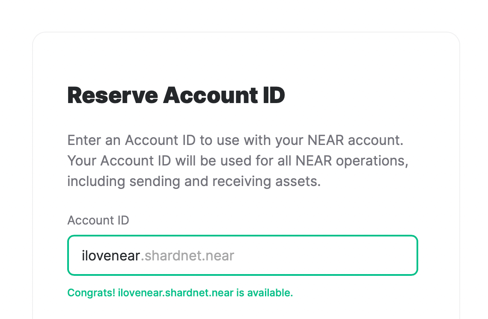
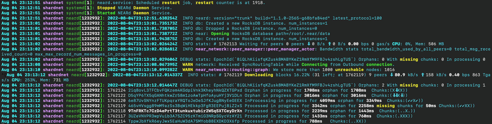

Follow along to learn how to deploy a Near shardnet validator in the cloud.
My hosting provider of preference is Hetzner, whose cloud offerings we'll be using in this guide.
For NEAR Stakewars III, I recommend using 8+ CPU cores, 16 GB RAM, and 200 GB+ disk space.
A starter choice is CPX41 with 8 AMD CPUs, 16 GB RAM and 240 GB space at €0.044 / h, i.e. €26.66 / mo. For this guide, I chose CPX51 in Falkenstein (Germany) with 16 AMD CPUs, 32 GB of RAM and 360 GB disk space for €0.094 / h, i.e. €58.79 / mo.
Choose a location of choice, then 1. OS image: Ubuntu, 2. Type: Standard, 3. e.g. CPX41, 4. Volume: 200 GB, 5. Networking: Public IPv4, Public IPv6. Add an SSH key to log in.
To kick things off, it's time to create a brand new Near account on Shardnet. To do this, use the Shardnet Wallet.
Thanks to Near Wallet's user-friendliness, all you need to do is to click on Create Account.
Next, you can reserve your new account ID.

Handy Shardnet Links:
Cool! Now let's set up NEAR CLI.
sudo apt update && sudo apt upgrade -y curl -sL https://deb.nodesource.com/setup_18.x | sudo -E bash - sudo apt install build-essential nodejs PATH="$PATH" sudo npm install -g near-cli
Set Near testnet as persistent environment variables:
echo 'export NEAR_ENV=shardnet' >> ~/.bashrc echo 'export NEAR_ENV=shardnet' >> ~/.bash_profile source $HOME/.bash_profile
Test NEAR CLI by checking out its help page
near --help
Challenge 2 is all about getting your validator node running. May the real fun part begin!
Firstly, let's confirm that your machine's CPU supports AVX instructions which are required.
lscpu | grep -P '(?=.*avx )(?=.*sse4.2 )(?=.*cx16 )(?=.*popcnt )' > /dev/null \ && echo "Supported" \ || echo "Not supported"
If that went well, install dependencies
sudo apt install -y clang build-essential make git binutils-dev libcurl4-openssl-dev zlib1g-dev libdw-dev libiberty-dev cmake gcc g++ python docker.io protobuf-compiler libssl-dev pkg-config clang llvm cargo python3-pip
Set configuration
USER_BASE_BIN=$(python3 -m site --user-base)/bin export PATH="$USER_BASE_BIN:$PATH"
Install Rust and cargo
curl --proto '=https' --tlsv1.2 -sSf https://sh.rustup.rs | sh -s -- -y source $HOME/.cargo/env
git clone https://github.com/near/nearcore cd nearcore git fetch
Check out to the required commit found here (e.g. 68bfa84ed1455f891032434d37ccad696e91e4f5), then
git checkout
You can now build nearcore via cargo build with the following flags
cargo build -p neard --release --features shardnet
This takes a little while, go get some coffee or tea. The binary path is target/release/neard.
NEAR node requires a working directory and configuration files. Generate the initial required working directory by running
./target/release/neard --home ~/.near init --chain-id shardnet --download-genesis
Replace the config file
rm ~/.near/config.json wget -O ~/.near/config.json https://s3-us-west-1.amazonaws.com/build.nearprotocol.com/nearcore-deploy/shardnet/config.json
cd ~/nearcore ./target/release/neard --home ~/.near runFinally, activate your node as a validator by authorizing your wallet. This is because a full access key needs to be installed locally to be able to sign transactions via NEAR-CLI.
near login
Follow the instructions and copy the generated link into your browser, which will allow you to grant access to Near CLI. Enter your account name and press enter.
Let's get going by generating a new key for your pool.
near generate-key [pool_id]
Note: [pool_id] --> xx.factory.shardnet.near WHERE xx is you pool name.
Copy the file generated to shardnet folder: Make sure to replace [pool_id] by your accountId.
cp ~/.near-credentials/shardnet/YOUR_WALLET.json ~/.near/validator_key.json
Make the following changes:
1. Edit "account_id" to xx.factory.shardnet.near, where xx is your PoolName
2. Change "private_key" to "secret_key"
Note: The account_id must match the staking pool contract name or you will not be able to sign blocks.
The file's content should look similar to the following
{
"account_id": "xx.factory.shardnet.near",
"public_key": "ed25519:HeaBJ3xLgvZacQWmEctTeUqyfSU4SDEnEwckWxd92W2G",
"secret_key": "ed25519:****"
}
Awesome. You can now start your Near shardnet validator node
target/release/neard run
You're now ready to mount a staking pool. To ensure that delegator funds are safe, Near uses a staking pool factory with a whitelisted staking contract. To run a Near Validator, it is mandatory to deploy a staking pool to a Near Account and stake to the pool. Let's deploy a staking pool contract.
Call the staking pool factory, create a new staking pool with the specified name, and deploy it to the indicated accountId:
near call factory.shardnet.near create_staking_pool '{"staking_pool_id": "", "owner_id": "[account_id]", "stake_public_key": "", "reward_fee_fraction": {"numerator": 5, "denominator": 100}, "code_hash":"DD428g9eqLL8fWUxv8QSpVFzyHi1Qd16P8ephYCTmMSZ"}' --accountId="[account_id]" --amount=30 --gas=300000000000000
Replace as follows:
You can change pool parameters, such as e.g. updating the fee to 1%, as follows:
near call [pool_id] update_reward_fee_fraction '{"reward_fee_fraction": {"numerator": 1, "denominator": 100}}' --accountId [account_id] --gas=300000000000000
After this, you should be able to find your pool on the Shardnet explorer's validator page.
Find below a list of actions and respective comamnds
# Deposit and Stake NEAR near call [pool_id] deposit_and_stake --amount--accountId [account_id] --gas=300000000000000 # Unstake NEAR, note: amount in yoctoNEAR near call [pool_id] unstake '{"amount": "[amount yoctoNEAR]"}' --accountId [account_id] --gas=300000000000000 # Unstake all near call [pool_id] unstake_all --accountId [account_id] --gas=300000000000000 # Withdraw, requires 2-3 for completion after which you can withdraw from the pool (in yoctoNEAR) near call [pool_id] withdraw '{"amount": "[amount yoctoNEAR]"}' --accountId [account_id] --gas=300000000000000 # Withdraw all near call [pool_id] withdraw_all --accountId [account_id] --gas=300000000000000 # Ping, issues a new proposal and updates the staking balance for your delegators. Should be issued each epoch to keep reported rewards up to date. near call [pool_id] ping '{}' --accountId [account_id] --gas=300000000000000 # Total Balance command near view [pool_id] get_account_total_balance '{"account_id": "[account_id]"}' # Staked Balance near view [pool_id] get_account_staked_balance '{"account_id": "[account_id]"}' # Unstaked Balance near view [pool_id] get_account_unstaked_balance '{"account_id": "[account_id]"}' # Withdraw unlocked funds near view [pool_id] is_account_unstaked_balance_available '{"account_id": "[account_id]"}' # Pause Staking near call [pool_id] pause_staking '{}' --accountId [account_id] # Resume Staking near call [pool_id] resume_staking '{}' --accountId [account_id]
Set up tools for monitoring your Near validator node's status.
Depending on your setup, Near log files are stored either in ~/.nearup/logs or in systemd.
journalctl -n 100 -f -u neard | ccze -A
sudo apt install curl jq
Find below a list of common commands:
# Check node version curl -s http://127.0.0.1:3030/status | jq .version # Check delegators and stake near view.factory.shardnet.near get_accounts '{"from_index": 0, "limit": 10}' --accountId [accountId].shardnet.near # Check reason for why validator was kicked curl -s -d '{"jsonrpc": "2.0", "method": "validators", "id": "dontcare", "params": [null]}' -H 'Content-Type: application/json' 127.0.0.1:3030 | jq -c '.result.prev_epoch_kickout[] | select(.account_id | contains ("[POOL_ID]"))' | jq .reason # Check blocks produced / expected curl -r -s -d '{"jsonrpc": "2.0", "method": "validators", "id": "dontcare", "params": [null]}' -H 'Content-Type: application/json' 127.0.0.1:3030 | jq -c '.result.current_validators[] | select(.account_id | contains ("POOL_ID"))'